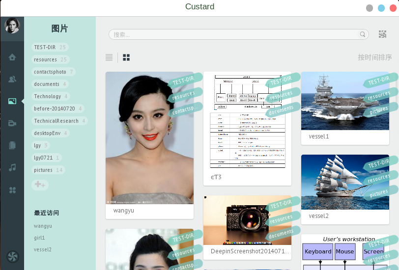
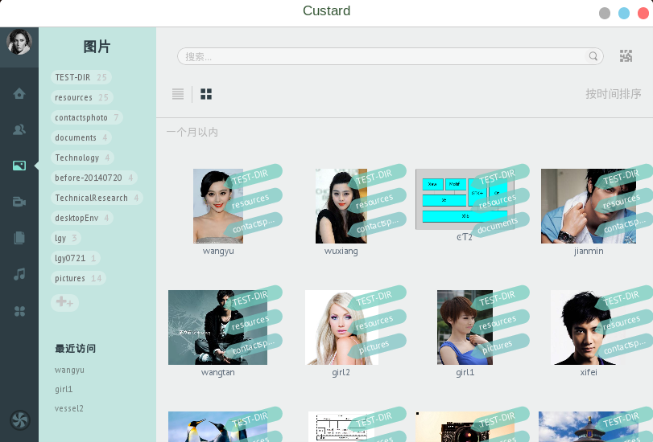
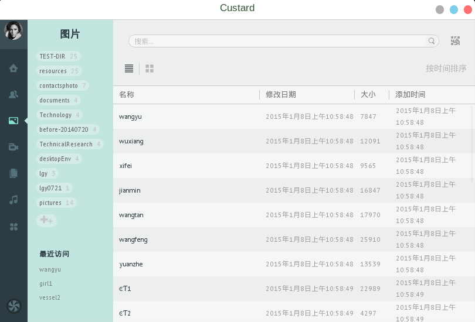
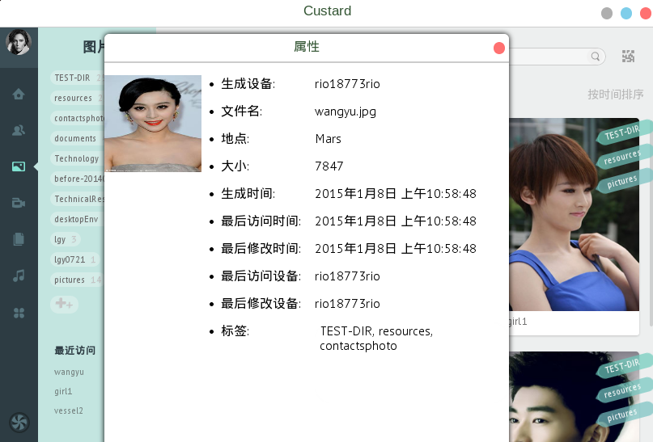

在数据管理器左边的导航栏中点击第三个图标，即可进入图片管理页面，页面的左侧显示的是图片标签列表，页面的右侧显示的是图片的缩略图和每张图片所拥有的标签。如下图所示：
图片管理中的图片支持按照生成时间排序，点击“按时间排序”，即可显示排序后的预览结果：
除此之外，图片显示还支持按详细信息形式显示，点击“一个月以内”文字上方的左侧按钮，即可显示图片名称，修改日期，大小和添加时间：
用户右击图片，在弹出的菜单中可以看到“打开”、“重命名”、“删除”、“标签”和“详细信息”，对应的项分别可以用默认的图片查看器打开文件，重命名文件，删除文件。当用户点击“详细信息”按钮，即可查看相应图片的生成设备、文件名、拍摄地点、大小、时间信息、最后访问设备和标签信息。如下图：
